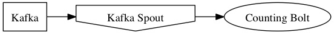
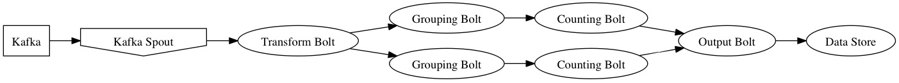
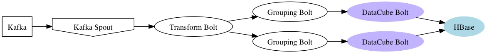

bcotton@rallydev.com
@bob_cotton


Count events arriving at your website
(defbolt event-counting-bolt [event] (count event) (count-username event) (count-browser event) (count-username-and-browser event) (count-username-and-browser-and-geoip event))
(defbolt event-counting-bolt [event] (count event) (count-username event) (count-browser event) (count-username-and-browser event) (count-username-and-browser-and-geoip event) (let [timestamp (:timestamp event)] (count-username (:hour timestamp) event) (count-username (:hour timestamp) event) (count-username-and-browser (:hour timestamp) event) (count-username-and-browser-and-geoip (:hour timestamp) event)))
and so on for day, week, month and year.
What operating system version are they using?
A Dimension is a single facet of some measure.
A Rollup tracks a thing being measured. Rollups may have several dimensions.
A Bucketer sub-divides dimensions. e.g. Time can be bucketed into years, months, weeks, days etc
Count the number of tweets by time, retweets, user and tags.
(defcube tweets-cube :long (rollup)) (write-value tweets-cube 1) (read-value tweets-cube) => 1
(defcube tweets-cube :long (string-dimension :user) (rollup :user)) (write-value tweets-cube 1 (at :user "bob")) (write-value tweets-cube 4 (at :user "anne")) (read-value tweets-cube (at :user "bob")) => 1 (read-value tweets-cube (at :user "anne")) => 4
(defcube tweets-cube :long (time-dimension :time) (string-dimension :retweeted-from) (string-dimension :user) (tags-dimension :tags) (rollup) (rollup :user) (rollup :user :time day-bucket) (rollup :retweeted-from) (rollup :user :retweeted-from) (rollup :tags) (rollup :tags :time hour-bucket)) (write-value tweets-cube 1 (at :time (:time tweet)) (at :user (:username tweet)) (at :retweeted-from (or (:rt-from tweet) "")) (at :tags (:hash-tags tweet)))
Not too verbose:
public void countTweet(Tweet tweet) throws IOException, InterruptedException, AsyncException { WriteBuilder writeBuilder = new WriteBuilder(dataCube) .at(timeDimension, tweet.time) .at(userDimension, tweet.username) .at(retweetedFromDimension, tweet.retweetedFrom.or("")) .at(tagsDimension, tweet.hashTags); Batch<LongOp> cubeUpdates = dataCube.getWrites(writeBuilder, new LongOp(1)); dataCubeIo.writeAsync(cubeUpdates); }
Datacube targets a "Big Table" like data storage. A persisted cube is just a flattened to Key -> Value
(rollup :user)
(rollup :user :time day-bucket)
Putting it together:
